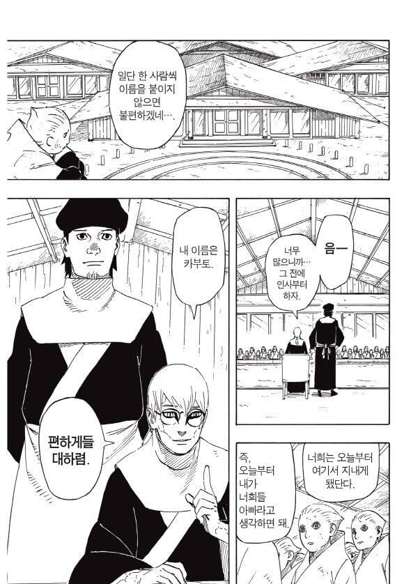

지금부터 서로 죽여라가 아니라 이게 공식임ㄷㄷ

지금부터 서로 죽여라가 아니라 이게 공식임ㄷㄷ
근데 진짜 키시모토의 인재등용은 대단하다
어떻게 최종보스급 전쟁범죄자를 교육자에 배치하지
교육자ㄴㄴ 고아원장 ㅇㅇ
"사륜안 보유자 수십명을 보유중인 고아원" 전쟁범죄쯤이야 가볍게 넘길만하지 ㅋㅋ
근데 이자나미로 ㄹㅇ 교화가 되어버렸으니 괜찮지않을까
친일파의 광복이후 모습하고 비슷하네
마지막에 사스케 살리고 노선 갈아탔으니ㅋㅋㅋ
인정...하라는 말이냐?
히틀러 잡아서 화가나 해라는 급 아니냐
빈라덴도 축구선수하고 싶었다던데 잡아서 뛰게 해주지
팬들의 추측으론
1, 사스케는 범죄 수준이 오로치마루나 카부토보다 낮다고 해도 무고한 닌자들을 죽이거나 해치고 다닌 범죄자임. 이타치 죽이기 전까진 복수와 상관없는 사람들은 절대로 안 죽였지만, 이타치 죽이고 오비토에게 진실을 들은 뒤부터는 맛이 가서 그냥 걸리적거리면 죄다 죽여버리는 망나니가 됐었음. 범죄 조직과 손잡기 위해 킬러비 공격한 건 덤. 단조 살해조차도 나뭇잎 상층부는 절대로 우치하 일족 몰살에 대한 진실을 공론화시키지 않을 것이기에 사스케는 공식적으로는 '죄 없는 단조'를 '묻지마 살해'한 정신 나간 살인마임.
그렇지만 사스케는 무한 츠쿠요미를 저지한 공으로 사면됐다고 직접 언급됨. 즉, 역대 호카게들의 예토전생을 전장에 투입시켜 닌자연합군에게 막대한 도움을 준 오로치마루, 죽어가던 사스케를 치료하고 하시라마 세포를 사용해 사스케가 윤회안을 각성하게 만든 카부토 역시 같은 이유로 사면될 명분만은 마련됨. 명분만.
2. 전쟁 자체가 증오의 연쇄가 쌓이고 쌓이다 터진 형태였고, 닌자연합군은 '증오를 끊어내고 새로운 시대를 만들기 위해' 모였음. 그 첫 걸음으로서 오로치마루와 카부토를 벌하기보단 반성할 여지를 충분히 보였기에 엄격한 감시 아래를 조건으로 평생 속죄하는 삶을 5대국이 전부 찬성했을 수 있음.
작품 메시지상으로도 이게 좋은 그림이긴 한데 문제는 나루토 본편이 사스케 외엔 범죄자 처리가 어떻게 됐는지 언급 안 하고 '카구야 잡았다 전쟁 끝!'으로 났고, 과정이 생략된 채 보루토에서 결과만 보이니 나루토 이미지만 안 좋아짐.
3. 그 커다란 전쟁의 전범이 고아원 원장으로 있다니 주민이 알면 난리가 나야 하지만, (사면됐다는 전제 하에) 카부토가 전범이란 사실을 알 사람이 적을 거란 분석도 있음.
저 짤방에서 카부토 뒤에 있는 게 카부토와 같은 고아원 출신이자 카부토의 의형인 우루시인데, 나루토 본편에선 닌자연합군에서 의료 닌자로 일하는 것으로 등장하면서 "내 동생은 지금도 먼 곳에서 마을의 임무 수행 중이다"라고 말하고(카부토는 단조에 의해 스파이 임무를 맡고 멀리 나갔고, 단조에게 배신당하자 나뭇잎을 등짐), 카부토를 그리워하고 있었음.
즉, 카부토가 전범이란 사실은 공연한 사실이 아님. 카게급과 그 직속 부하들 정도나 아는 정보였을 수도 있음.
보루토 시대에선 사스케 과거 관련 기록은 열람불가로 막아놓고 있는 모습으로, 나루토도 정보 통제하고 있단 걸 묘사하고 있는데, 카부토나 오로치마루 정보도 이러고 있다면 주민들은 물론이고 어중이떠중이 닌자들은 모를 거임.
나루토 결말부 사후처리는 생각해본 적도 없었네
고맙다 댓글 재밌게 봤어
일본만화 볼때마다 신기한게 악인의 갱생에 굉장히 관대해. 근데 어릴때 보던 일본의 극화만화들은 김성모만화처럼 인과응보에 얄짤없었거든. 근데 어느순간부터 소년만화들이 이런게 심해진거같아. 사무라이디퍼 쿄우였나 이거는 너무 심해서 보기힘들정도였어
증오의 연쇄 끊는게 나루토의 근본 스토리라서 어쩔수없긴해
나루토의 대척점으로 있던 사스케에게 이타치가 증오가 부족하다고 한 연출도 그렇고
일본은 인체실험하는 미친과학자 페티시가 있나?
나루토 카부토, 블리치 마유리, 나히아 마루타, 사펑2 쿄코 죄다 묘하게 푸시도 많이 받고 취급도 좋음
나히아 박사는 아예 이름이 마루타였다가 바뀌었고
매도사이언티스트 쿄하하하
누가봐도 순진한 고아들을 끌어들이기 위한 허위 광고
공식이 뭘 알아